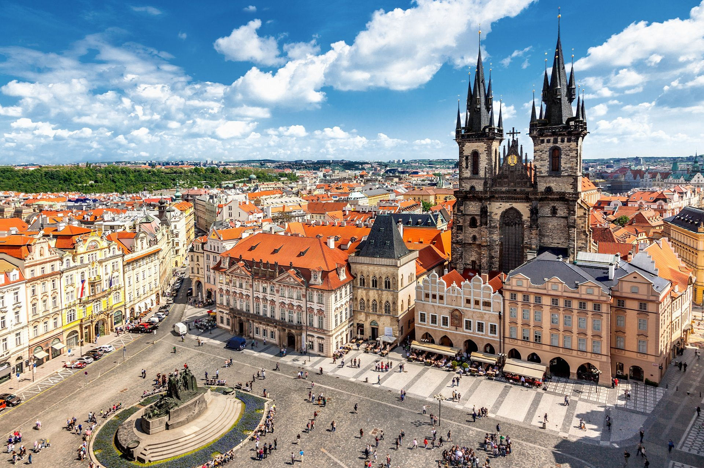
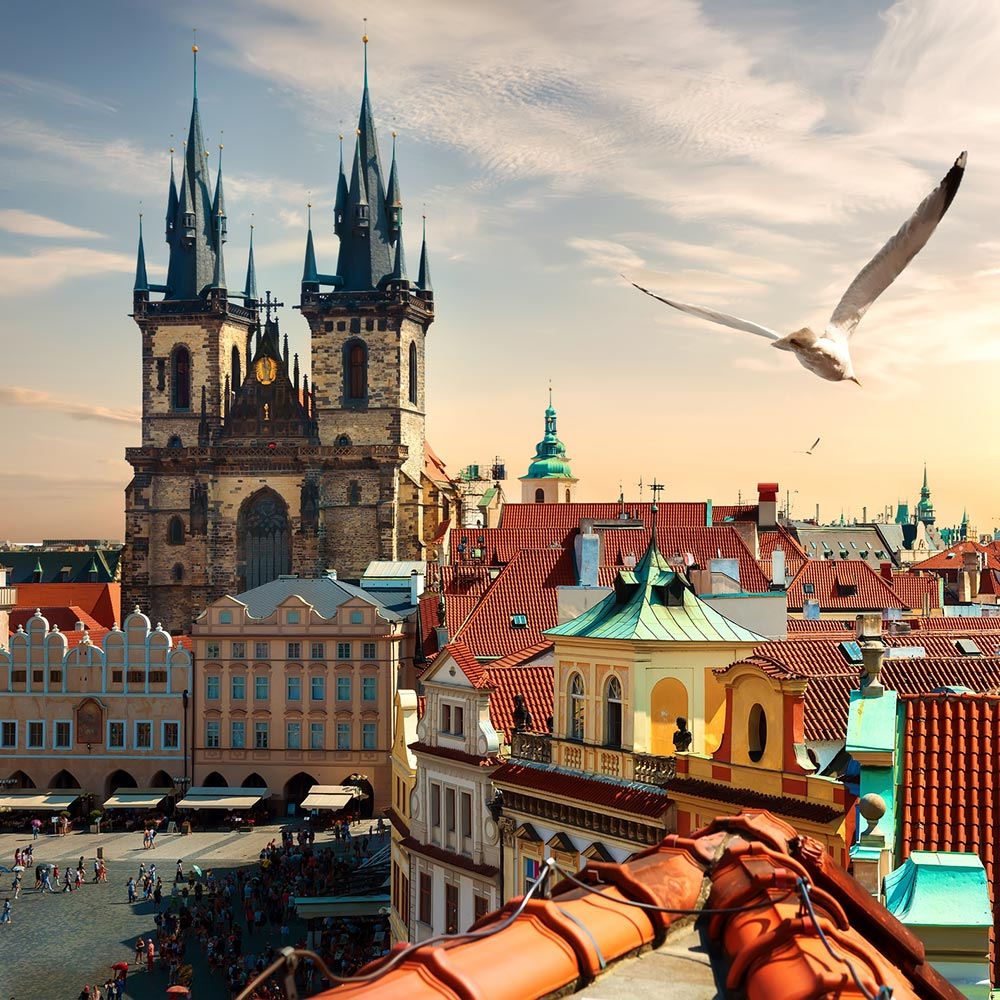
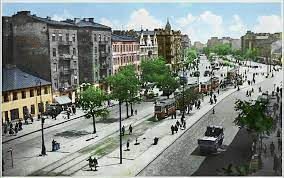
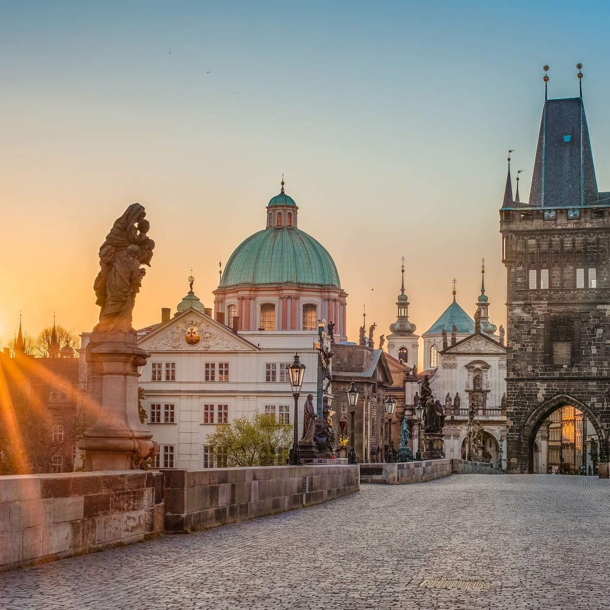
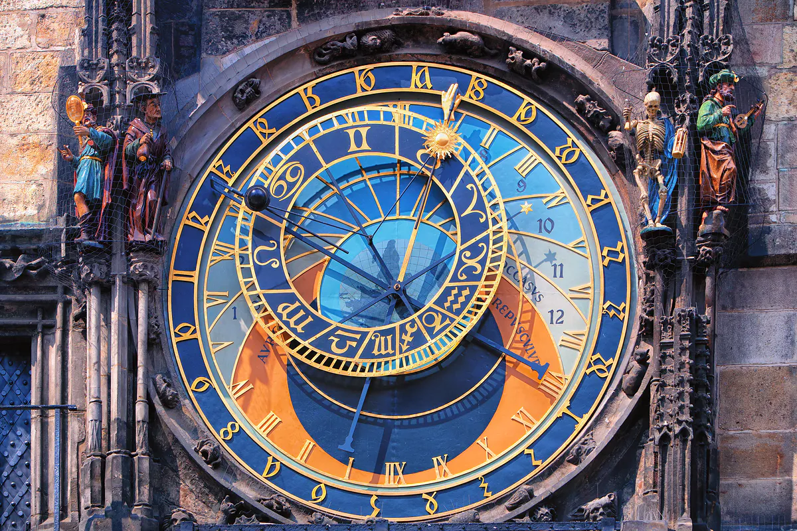
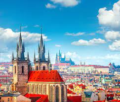
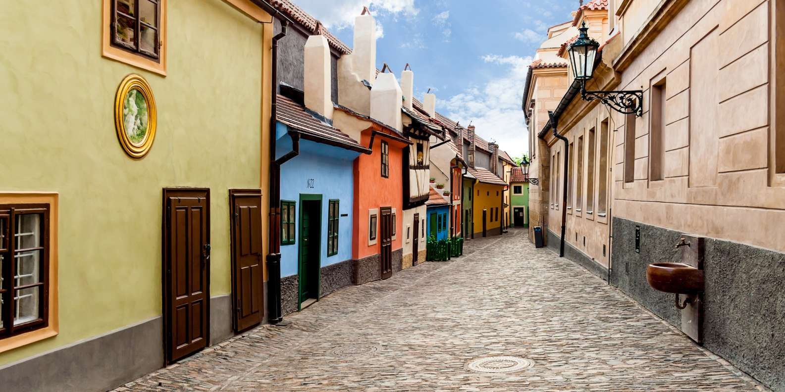
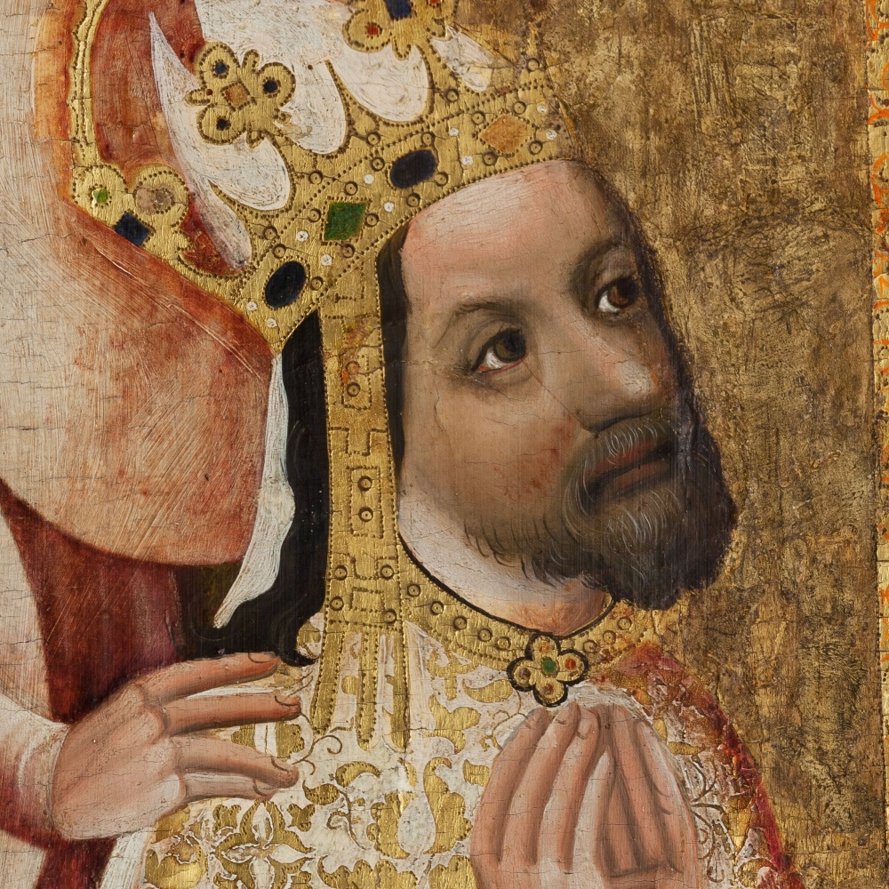
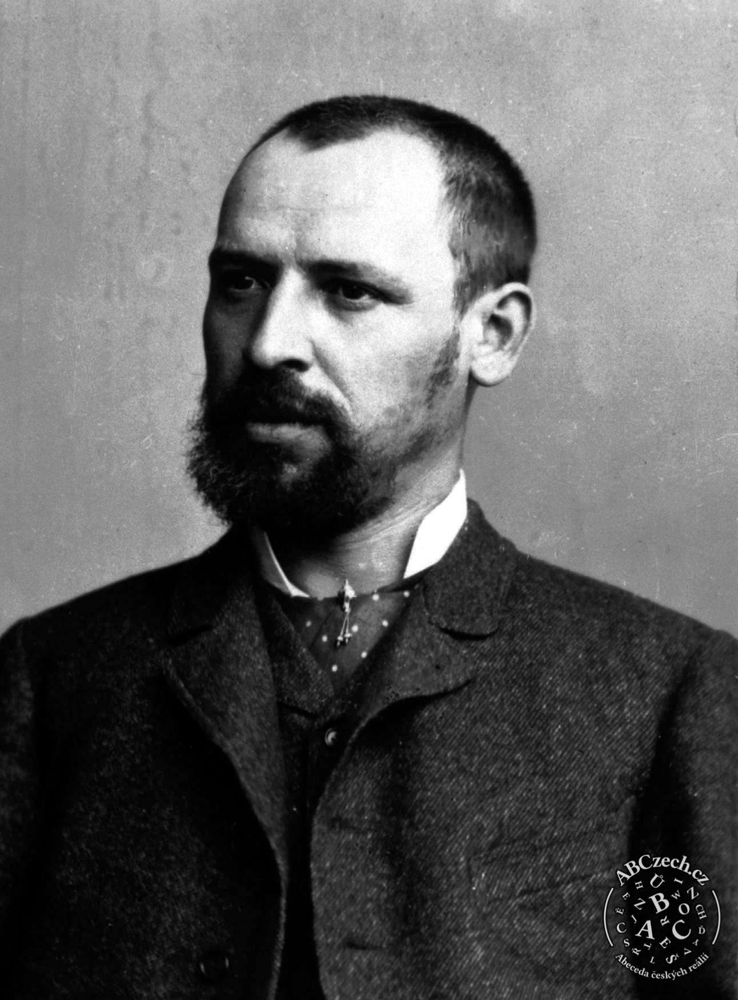
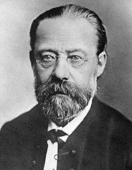

PRAGA
Jakie to miasto?
Praga – największe miasto i zarazem stolica Czech jest położone w środkowej części kraju nad rzeką Wełtawą. Miasto to spełnia wiele ważnych funkcji. Jest ośrodkiem administracyjnym — to tu znajdują się siedziby parlamentu, prezydenta i rządu. Praga to zarazem centrum akademickie, kulturalne i turystyczne. W 1992 roku jej zabytkowe centrum zostało wpisane na listę światowego dziedzictwa UNESCO i jest jednym z tych miast, które po prostu warto odwiedzić, choć na chwilę.
Nazwa
Nazwa miasta jest związana z jego budową. "Prah" to inaczej próg i ma się tu na myśli próg rzeczny czyli przeprawę przez Wełtawę, która znajdowała się w okolicach dzisiejszego Mostu Karola. W granicach administracyjnych dzisiejszej Pragi znajdują się dzielnice: Stare i Nowe Miasto, słynna Mała Strana, Josefova czy chociażby Hradczany. Niegdyś były one osobnymi, samodzielnymi okręgami, które w 1784 roku zostały połączone w jedno miasto.
Historia
Pierwsze plemiona słowiańskie przybyły na te tereny ok. 500 roku n.e. Walki o dominację doprowadziły ok. 800 roku do władzy dynastię Przemyślidów, którzy założyli tu miasto. Wznieśli oni dwie duże osady: Zamek Praski i Wyszehrad. Od 973 roku Praga była siedzibą pierwszego biskupstwa. Szczególny rozkwit miasto osiągnęło za rządów Karola IV. Założył on tu pierwszy w środkowej Europie uniwersytet – Carolinum, a Praga po założeniu Nowego Miasta w 1348 r. stała się największym miastem Europy na północ od Alp. W roku 1344 praskie biskupstwo zostało podniesione w hierarchii kościelnej do rangi arcybiskupstwa. W 1419 w mieście doszło do słynnej defenestracji katolików , zaś w 1618 roku podobne wydarzenie (wyrzucenie przez okno namiestników cesarza) stało się bezpośrednią przyczyną wojny trzydziestoletniej. W wyniku klęski czeskich protestantów na Białej Górze w 1620 Praga jako stolica Królestwa Czech i całej Korony Czeskiej utraciła swoje znaczenie i przez długie lata pozostawała w cieniu Wiednia. W tym też okresie społeczność niemieckojęzyczna odgrywała w mieście (niem. Prag) rolę dominującą, zaczęło się to zmieniać dopiero w XIX wieku, podczas czeskiego odrodzenia narodowego. W 1741 roku Pragę zajęły wojska Saksonii, Bawarii i Francji[5]. W 1744 r. podczas II wojny śląskiej Pragę po dwutygodniowym oblężeniu zdobyli Prusacy, jednak w 1745 roku w pokoju drezdeńskim Austria zdołała potwierdzić swoje panowanie nad Czechami. W dniu 6 maja 1757 roku podczas wojny siedmioletniej doszło do bitwy pod Pragą, w której zwycięstwo odnieśli Prusacy, którzy jednak nie zajęli miasta.
Słynne Zabytki
Praga to bez wątpienia jedno z najciekawszych miast w Europie.Zwiedzającym oferuje różnego rodzaju atrakcje, imponuje ciekawą architekturą, a dziesiątki wąskich uliczek starówki ma swój niepowtarzalny klimat.Zabytkowe centrum Pragi znajduje się także na liście Światowego Dziedzictwa UNESCO. 5 miejsc, które musisz odwiedzić w Pradze
1. Most Karola Ozdobiony kilkudziesięcioma barokowymi statuami jest chyba najbardziej charakterystycznym i urokliwym miejscem w Pradze. Most ma 621 metrów długości i prawie 10 metrów szerokości.
2. Zamek na Hradczanach Zamek na Hradczanach nazywany również Zamkiem Praskim - to kompleks zamkowy, na który składa się kilkanaście innych budowli istniejący od IX wieku. W przeszłości był siedzibą królów czeskich, a obecnie jest rezydencją Prezydenta Republiki Czeskiej.

3. Praski zegar astronomiczny Nazywany również praskim Orlojem, to średniowieczny zegar astronomiczny zainstalowany w 1410 roku, co czyni go jednym z trzech najstarszych zegarów astronomicznych na świecie.Znajduje się on na południowej ścianie Ratusza Staromiejskiego na praskim rynku.
4. Kościół Najświętszej Marii Panny przed Tynem Gotycki kościół, z imponującymi dwiema 80-metrowymi wieżami, stanowi piękny, wyróżniający się na tle innych budynek na praskim Rynku.Był głównym kościołem tej części miasta od XIV wieku.
5. Złota uliczka Ulica na terenie Praskiego Zamku na Hradczanach.Jej początki sięgają XVI wieku, kiedy znajdowały się tam pomieszczenia mieszkalne dla straży zamkowej, jej obecna nazwa pochodzi jednak od zamieszkujących ją w XVII wieku złotników-Żydów, który w ten sposób pracowali na schronienie przy zamku.
Król Karol IV
Były władca Świętego Cesarstwa Rzymskiego, król Czech i główny dobroczyńca Pragi to najsłynniejszy Czech. Kiedy Karol I przejął władzę w 1346 roku, przekształcił Pragę w stolicę Kościoła rzymskokatolickiego, a także jedną z najbardziej zaawansowanych metropolii na kontynencie.
Josef Václav Myslbek
Czeski rzeźbiarz w XIX w. I XX w. Początkiem jego kariery artystycznej była nauka w atelier Vaclava Levy’ego. Po jego śmierci w roku 1870 prędko się usamodzielnił. Studiował malarstwo w Akademii Sztuk Pięknych w Pradze, niemającej wówczas wydziału rzeźby. Ożenił się w roku 1873; z żoną Karoliną mieli ośmioro dzieci, większość z nich zmarła jednak w młodym wieku.
Bedřich Smetana
Od młodości uczył się gry na fortepianie i skrzypcach, grywał również w amatorskim kwartecie smyczkowym, do którego należeli członkowie jego rodziny. Studiował muzykę w Pradze. Pracował tam jako nauczyciel muzyki, a w 1848 otrzymał pomoc finansową Ferenca Liszta na założenie własnej szkoły.
